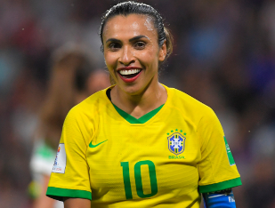
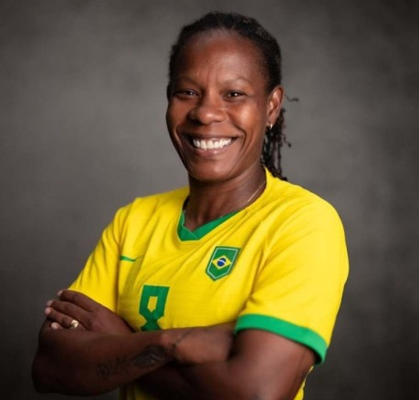

O COMEÇO DA SELEÇÃO BRASILEIRA FEMININA:

Como toda trajetória do futebol feminino no Brasil, durante muitos anos ocorreram diversas dificuldades. É impossível falar sobre o começo da Seleção Brasileira Feminina sem citar as proibições que as mulheres foram submetidas durante décadas no esporte. Os primeiros registros da partidas entre mulheres no Brasil ocorreram na década de 1920, mas associada ao circo, como um show. Na década de 1940, ocorreram partidas de mulheres no Pacaembu, mas sem registros da criação de um selecionado. Porém em 1941 houve a primeira proibição, ainda de forma vaga, mas sob a chancela do CND (Conselho Nacional de Desportos). Em 1965 o governo militar decretou a proibição de mulheres no futebol, alegando este ser incompatível ao gênero, que era praticado de forma clandestina. O fim da proibição se deu em 1979, mas isso não significa que a vida delas ficou mais fácil. Com pouco apoio e financiamento de clubes, o início foi espinhoso e carecia de regulamentação. Esta veio em 1983, e com dois clubes o Radar e o SAAD. A partir de então, aos poucos o futebol feminino passou a engatinhar e a primeira convocação foi em 1986, na disputa do Mundialito. A primeira partida da Seleção Brasileira de Futebol Feminino ocorreu em 22 de julho de 1986, na derrota para os Estados Unidos por 2 a 1. Dois dias depois, um empate coma China encerrou as primeiras partidas de um selecionado brasileiro.
BRASIL EM COPAS DO MUNDO FEMININAS:

O Brasil teve desempenho modesto nos primeiros mundiais femininos de futebol, com eliminações precoces em 1991 e 1995. Em 1999, conquistou o terceiro lugar nos Estados Unidos, mas em 2003 foi eliminado nas quartas. Em 2007, chegou à final, perdendo para a Alemanha. Nas edições seguintes (2011, 2015 e 2019), o Brasil passou das fases de grupos, mas foi eliminado nas quartas, oitavas e oitavas, respectivamente. Apesar de momentos notáveis, a seleção feminina brasileira ainda busca o título mundial.
MAIORES ARTILHEIRAS:
- Marta: 104 gols
- Cristiane: 83 gols
- Pretinha: 41 gols
- Roseli: 35 gols
- Sissi: 30 gols
Não apenas da Seleção Brasileira Feminina, como de todas as categorias, a rainha Marta é a atleta que mais marcou gols com a camisa amarelinha, superou o Rei Pelé e se tornou a maior artilheira de qualquer Seleção do Brasil.
JOGADORAS COM MAIS JOGOS PELA SELEÇÃO:
- Formiga: 156 jogos
- Cristiane Roseria: 117 jogos
- Rosana: 112 jogos
- Marta: 102 jogos
- Fabiana: 69 jogos
Na seleção brasileira de futebol feminina a polivalente Formiga superou inclusive o pentacampeão Cafu, sendo a atleta que mais vestiu a camisa da seleção.
TÍTULOS:

As meninas do Brasil nunca venceram uma Copa do Mundo, mas não quer dizer que não conquistaram nada. São oito títulos da Copa América, se mostrando muito superior no continente. Venceu também três vezes o Ouro nos Jogos Pan-Americanos, uma delas com o Maracanã lotado em 2007. Mesmo sem vencer nenhuma vez os Jogos Olímpicos, a Seleção Brasileira Feminina conquistou a Prata duas vezes. Em 2004 e 2008, chegou à final, mas acabaram derrotadas. Com o vice da Copa do Mundo de 2007, viveu seu melhor período, mesmo sem conquistar os títulos nas quais estiveram tão perto, e por isso merecem o destaque.